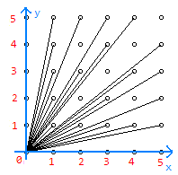

这个题，我也不知道他们的soltion是怎么写的这么长的。
我们发现我们一次看一条直线上的第一个点，也就是说，若两个点斜率\(k=\frac{y}{x}\)相同的话，我们只能看到x，y最小的那个点。
然后根据小学数学，\(\frac{x}{y}=\frac{kx}{ky}(k=1,2,3...)\)，也就是说，我们能看到的点的集合是\(\{(x,y)\mid x⊥y\ \&\ x\in N_+\ \& y\in N_+ \}\)，那我们实际上就是求：对于一个数x，有几个和他互质的数，也就是求欧拉函数。
我们观察一下图，可以这样建立一下坐标系

就一目了然了，显然就是求\(3+\sum_{i=3}^{n}\phi(i-1)*2\)
最后，特判一下1和2就可以了。
#include <bits/stdc++.h>
using namespace std;
const int N = 1e5 + 10;
int n, num;
int p[N], phi[N];
bool vis[N];
template<class T>inline void read(T &x) {
x = 0; int f = 0; char ch = getchar();
while (!isdigit(ch)) f |= (ch == '-'), ch = getchar();
while (isdigit(ch)) x = x * 10 + ch - '0', ch = getchar();
x = f ? -x : x;
return;
}
void shai(int n) {
phi[1] = 1;
for (int i = 2; i <= n; ++i) {
if (!vis[i]) p[++num] = i, phi[i] = i - 1;
for (int j = 1; j <= num; ++j) {
if (p[j] * i > n) break;
vis[i * p[j]] = 1;
if (i % p[j] == 0) {
phi[i * p[j]] = phi[i] * p[j];
break;
} else phi[i * p[j]] = phi[i] * phi[p[j]];
}
}
}
int main() {
read(n);
shai(N);
if (n == 1) {
printf("1");
return 0;
}
if (n == 2) {
printf("3\n");
return 0;
}
int ans = 3;
for (int i = 1; i <= n; ++i) printf("%d : %d\n", i, phi[i]);
for (int i = 3; i <= n; ++i) ans += phi[i - 1] * 2;
cout << ans;
return 0;
}